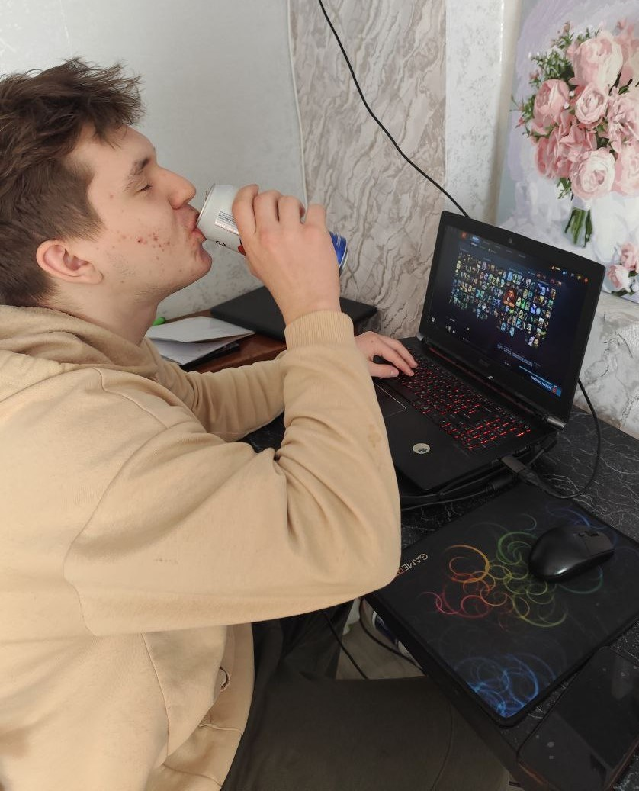

Володя рассказал, как достигает высоких результатов в Dota 2
автор: Саня
Сегодня Володя приоткрыл завесу тайны над своим игровым успехом. По его словам, секрет высоких показателей в Dota 2 заключается вовсе не в сверхъестественных навыках или специальных стратегиях.
Основой его побед стали, как он сам отметил, регулярные баночки пенного и поддержание отличной физической формы. Такой нестандартный подход вызвал живой отклик среди знакомых и подписчиков: одни с юмором отмечают оригинальность метода, другие считают, что физическая подготовка действительно играет роль даже в киберспорте.
Сам Володя убеждён, что сочетание бодрости и выносливости помогает ему сохранять концентрацию и показывать высокие результаты в игре, а баночка золотой водицы - помогает не унывать от тимейтов.

Комментарии
Тот самый чел, который при виде женщины направляет на неё руки и говорит: "Ф-Ф-ФАЕРБОЛ!!!!"
Помню эту легенду ещё со времён LoL'а (╥﹏╥)
Как говорил один мой старый друг:
Когда-то, мастер доты говорил о тимейтах такое: «А чо она молчит? А, это ж собака»